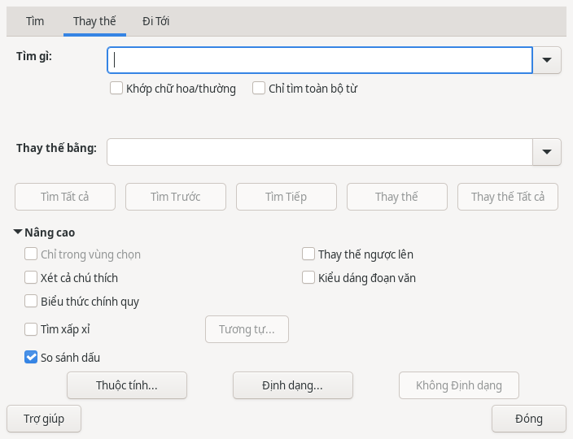
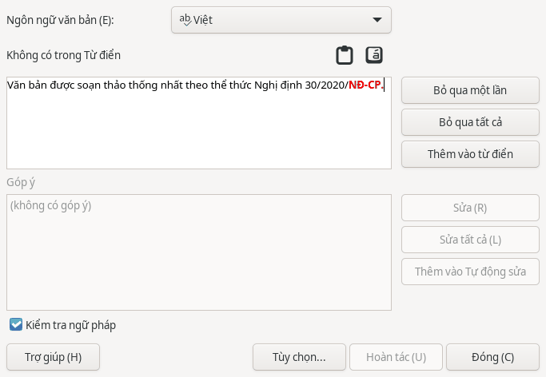

Văn bản
Văn bản: bảng, hình ảnh, tìm kiếm
Chèn bảng
- Đặt con trỏ tại vị trí cần chèn bảng.
- Chọn hoặc nhấn Ctrl+F12.
Hộp thoại có ba cách khớp bảng quen thuộc: , và . Với , cột tự rộng ra khi bạn gõ, và tệp .docx giữ lựa chọn này. Bảng trong tệp .doc, .docx thường vẫn giữ nguyên độ rộng khi mở. Tiêu đề, tên và kiểu bảng nằm trong .
Thuộc tính bảng
Đặt con trỏ trong bảng, rồi chọn . Các thẻ xếp theo thứ tự quen thuộc:
- : chiều rộng, căn chỉnh và . Chọn để chữ chạy quanh bảng, để đặt chỗ cho bảng.
- : chiều cao của hàng đang chọn, cho phép ngắt hàng qua trang, lặp lại hàng tiêu đề. và chuyển sang hàng khác mà không đóng hộp thoại; mọi thay đổi chỉ áp dụng khi bấm .
- : chiều rộng từng cột.
- : chiều rộng ô đang chọn, căn dọc và lề ô.
- : tiêu đề và mô tả cho người dùng bộ đọc màn hình. Nội dung này được giữ khi lưu tệp
.docxvà.odt.
, và (ngắt trang, xẻ bảng qua trang, hướng văn bản) nằm ở cuối danh sách.
Chèn hình ảnh
- Đặt con trỏ tại vị trí cần chèn ảnh.
- Chọn .
Vị trí và ngắt dòng quanh ảnh
Bấm đúp vào ảnh để mở hộp thoại ảnh. Ba thẻ đầu xếp như hộp thoại Bố trí của các bộ văn phòng phổ biến:
- : điểm neo, vị trí ngang và dọc.
- : , , , , , , . Bên dưới là phía có chữ và khoảng cách từ văn bản.
- : chiều rộng, chiều cao và khóa tỉ lệ.
Văn bản thay thế nằm ở thẻ . Khung văn bản và đối tượng dùng cùng các thẻ này.
Tìm, thay thế và đi tới
Nhấn Ctrl+H để mở . Hộp thoại có ba thẻ quen thuộc và vẫn mở khi bạn tiếp tục soạn thảo:
- : nhập vào ô , rồi bấm , hoặc .
- : thêm ô và các nút , .
- : chọn trang, phần, dòng, thẻ đánh dấu, chú thích, cước chú, chú thích cuối, trường, bảng, đồ họa, phương trình, đối tượng hoặc đầu đề; nhập số (hoặc tên thẻ đánh dấu) rồi bấm , hoặc bấm , . Nhập
+4hay-2để đi tiếp hay lùi so với vị trí hiện tại.
Các tùy chọn khác như , biểu thức chính quy, tìm theo định dạng hay kiểu đoạn văn nằm trong .

Kiểm tra chính tả
- Nhấn F7 hoặc chọn .
- Xem từ nghi sai và phần gợi ý trong hộp thoại. Với văn bản tiếng Việt, kiểm tra mục hiển thị .
- Dùng khi có cách sửa phù hợp, hoặc để giữ từ đang xem.
